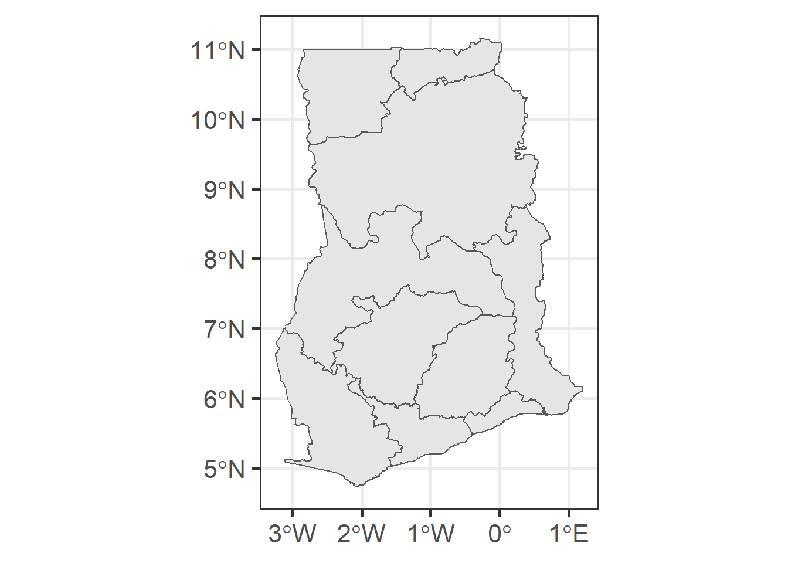
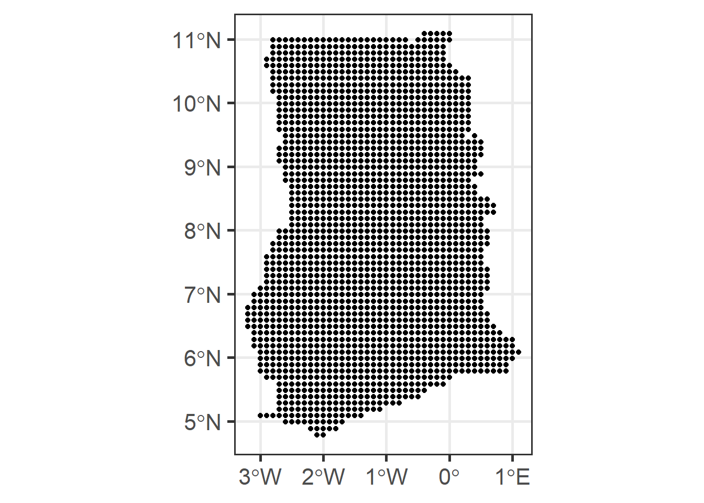
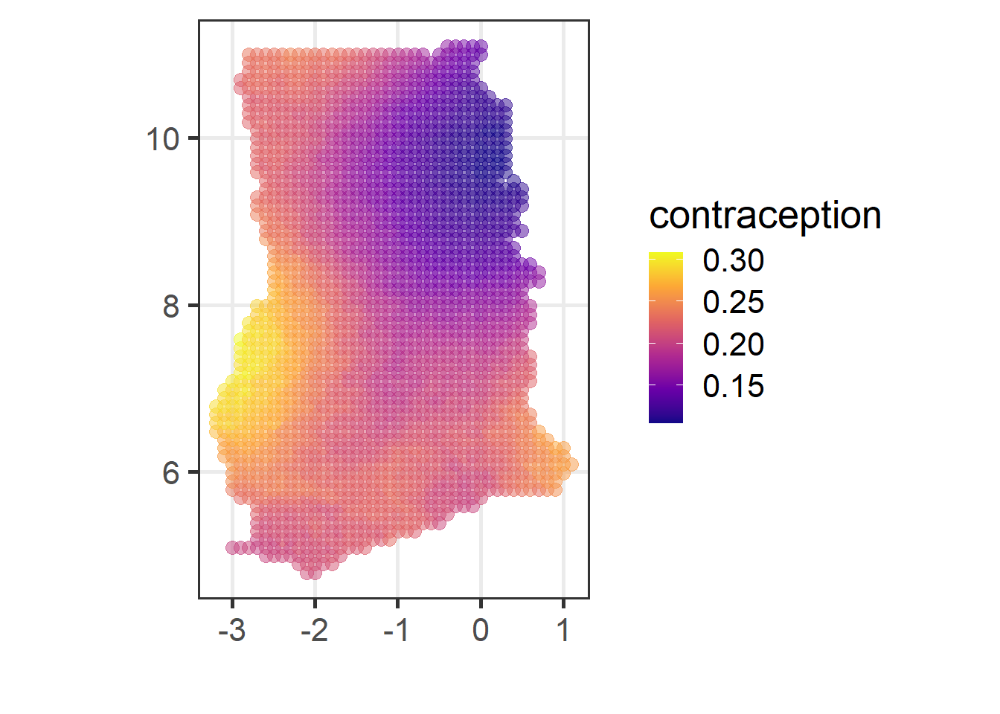
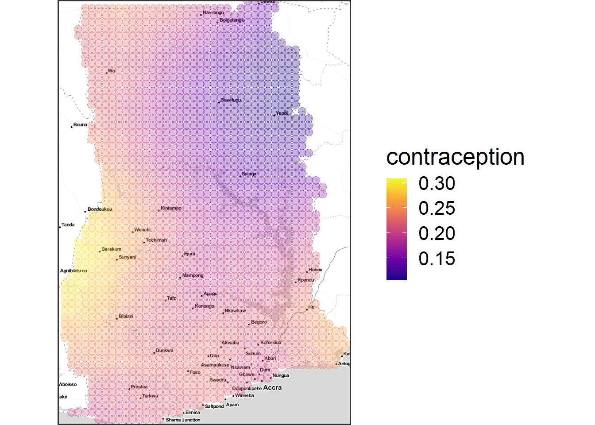

6 Preparing the admin shape file
6.1 raster map
- Unfortunately, there is no unified data source for different countries that handles country boundary files (note: DHS shapefile is the points for the survey locations).
- The example data used in this note is from here.
- Alternative files like this can be used, and yet shape files from other sources are not standardized, so user needs to be careful.
6.2 What we will do:
The code below does the following.
- Import the shape file.
- Draw a map plot from the shape file (validation).
- Extract the admin border (level 1); however the levels are not the same across different countries.
- Create the grid over the country bounding box and then choose those overlapping with the country boundary.
- Draw a map plot from the grid (validation).
- Create
grid_coord, with the coordinates assigned to each grid points.
6.3 Importing the shape files
- We first import the shapefiles, and then (visually) check the data.
- The shapefile contains the country border (not the small areas).
country_border <- st_read("../data/shps/sdr_subnational_boundaries.shp", quiet = TRUE)
ggplot(country_border) + geom_sf()
6.4 Creating a grid
- Now we create a grid so that we can use as a baseline for inference.
- We first create a coordinates grid as simple feature
then we convert it into a
tibbleso that we can use it withspatial_model_fit. The tibble is namedgrid_coord. - Since we used
lonandlatas the coordinates’ name, we need to renameXandYtolonandlat.
grid <- country_border %>% st_make_grid(cellsize = 0.1, what = "centers") %>% st_intersection(country_border)
ggplot() + geom_sf(data = grid)
grid_coord <- st_coordinates(grid) %>% as_tibble() %>%
rename(lon = X, lat = Y)6.5 Prediction based on resampling
Once
grid_coordis available, the code below chooses the nearest 10% of the (survey) clusters for each grid, sample 40% of them, and make a prediction for each grid point using unit level model by treating the sampled survey as observed data.We want to get a set of predictions for each grid in
grid_coord, soforloop runs overgrid_coord.All clusters in DHS data are considered for each grid point.
Once the loop is complete, it combines into a single
tibbleand then indexed for every grid point – namedgrid_tbl.
cluster_coord <- coord_info %>% dplyr::select(lon, lat) %>% na.omit
covariates_list <- list()
for (c_i in 1:nrow(grid_coord)){
cluster_dist_temp <- coord_info
cluster_dist_temp$p_rank <- rdist(cluster_coord, grid_coord[c_i,]) %>% percent_rank()
chosen_coord <- cluster_dist_temp %>% filter(p_rank <= 0.1)
chosen_tbl <- valid_set_with_sp %>% filter(DHSCLUST %in% chosen_coord$DHSCLUST)
covariates_list[[c_i]] <- chosen_tbl %>% sample_frac(0.4) %>%
select(V013R, V218R, V119, HV206)
}
grid_coord$grid_index <- 1:nrow(grid_coord) %>% as.character()
grid_samples <- bind_rows(covariates_list, .id = "grid_index")
grid_tbl <- left_join(grid_samples, grid_coord, by = "grid_index")6.6 Creating a grid map
grid_tblcan be used to create a grid map.- When predicting at a new location (not in the DHS survey),
predict_EMfunction is used. predict_EMis a wrapper taking two inputs: name of the spatial model obtained from andmultilevel_EMand a new data set.- New data set must have all the predictor variables used with
multilevel_EM, as well as two coordinates (in this example,lonandlat).
6.7 Calculation for each grid
- For each grid point, it uses the sampled survey data to make prediction.
- Then it aggregates all the prediction to get the average rate for each point.
# this is grid level aggregation
# predict function
g_index <- grid_tbl$grid_index %>% unique
grid_tbl$yhat <- NA
for (g in seq_along(g_index)){
g_tbl <- grid_tbl %>% filter(grid_index == g_index[g])
grid_tbl$yhat[grid_tbl$grid_index == g_index[g]] <-
predict_em(spatial_model_fit, test_set = g_tbl)
}
raster_tbl <- grid_tbl %>%
group_by(lat, lon) %>%
summarise(m_yhat = mean(yhat), .groups = "drop")6.8 Plotting
Plotting the grid points.
ggplot(raster_tbl) + aes(y = lat, x = lon, colour = m_yhat) +
xlab("") + ylab("") +
geom_point(size = 3, alpha = 0.5) + scale_colour_viridis_c("contraception", option = "C") + coord_map()
Overlaying the points over the map.
(out <-
ggmap(country_map, extent = "device") +
xlab("") + ylab("") +
geom_point(data = raster_tbl, aes(y = lat, x = lon, colour = m_yhat), size = 3, alpha = 0.3) + scale_colour_viridis_c("contraception", option = "C"))
One can get the raster_map.png file by running
ggsave(out, filename = "raster_map.png", width = 10, height = 8).
6.9 Area level (overview)
- Now we are creating a – administrative level 2 – small area estimate map.
- Shapefile is from here.
- We are using the
grid_coordwe created from the raster map. - Now we choose the intersection of grid point with each admin area, and then take the average over it.
6.10 Importing the shapefile
- We import the administrative file.
- One should choose the right administrative level from the available data set.
- In this example, we use level 2.
level_2_geom <- st_read("../data/admin_shapefiles/gha_admbnda_adm2_gss_20210308.shp", quiet = TRUE)6.11 Producing the prediction grid
- For each area (administrative region), we create a $ 7$ box grid and choose the portion within the area.
- For each point within the area, we choose the nearest 10% clusters (from DHS survey), and sample 30% from those clusters’ data.
- Then we calculate the prediction for each point, and MSE for each area.
- In this example, the model has two predictor variables
V218RandV013R, which can be found in the code. If the model uses different variables, one can change the modeling part.
outcome <-
produce_m_v_sae(spatial_model_fit, level_2_geom,
coord_info, frac = 0.1, resampling = 0.3, counter = FALSE)6.12 Creating a plot
sae_map <- ggplot(outcome) +
geom_sf(aes(fill = m)) +
scale_fill_viridis_c(name = "Modern \nContraception Use", option = "B")
print(sae_map)
sae_map2 <- ggplot(outcome) +
geom_sf(aes(fill = v)) +
scale_fill_viridis_c(name = "Modern \nContraception Use (MSE)", option = "B")
print(sae_map2)

One can create the ghana_sae_map_1.png by running
ggsave(sae_map, filename = "ghana_sae_map_1.png", width = 8, height = 8).